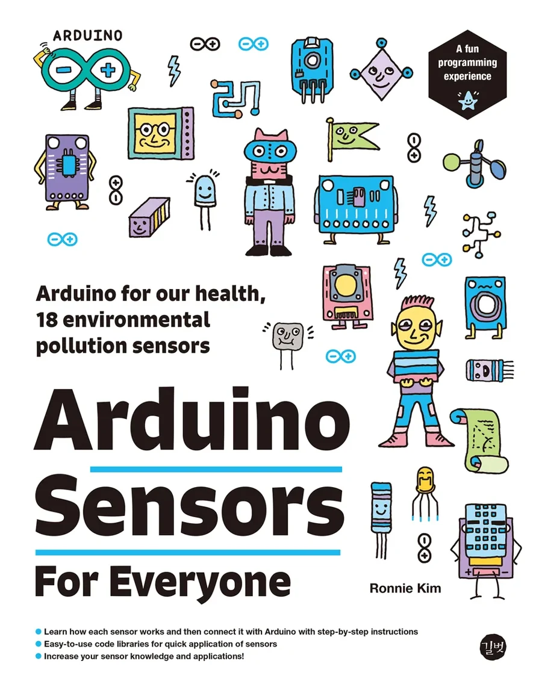

Arduino environmental sensor practice book
Measure the environment around you with Arduino and sensors.
Arduino Sensors for Everyone is a practical guide to connecting Arduino with 18 environmental pollution sensors, including fine dust, temperature and humidity, carbon dioxide, formaldehyde, TVOC, radiation, ozone, carbon monoxide, ultraviolet light, airflow, and wind speed.
The book connects sensor selection, datasheet reading, wiring, library use, measurement testing, and monitoring projects into one step-by-step learning path.
Learn how each sensor works, connect it with Arduino, and build your own environmental monitoring projects.
How the book is organized
Prepare
Choose the right sensor for the situation and learn the characteristics, output units, interfaces, and precautions that affect sensor performance.
Practice
Measure environmental conditions that affect the human body, from fine dust and humidity to ultraviolet light, formaldehyde, carbon dioxide, and radiation.
Build
Create a fine dust and temperature-humidity meter, then monitor results through an LCD screen, Bluetooth, Wi-Fi, and RF communication.
Expand
Understand sensor behavior, wiring, code structure, and datasheets so you can adapt the examples to your own IoT and maker projects.
18 sensors covered in this book
- Fine dust sensors: PMS7003, GP2Y1010AU0F, PPD42NS, SDS011
- Indoor air sensors: DHT22, MH-Z19B, ZE08-CH2O, CCS811, GDK101
- Outdoor air sensors: MQ-131, MQ-7, MiCS-4514, MiCS-6814, DGS-SO2
- Atmospheric environment sensors: BME280, GUVA-S12SD, MD0550, QS-FS01
This book is for readers who...
- Want to build practical Arduino projects connected to real environmental data
- Want to measure fine dust, CO₂, TVOC, ultraviolet light, temperature, humidity, and other air-quality values
- Need a step-by-step guide that explains the sensor, wiring, software code, and test results together
- Are interested in maker education, IoT practice, science projects, or environmental monitoring
- Want to extend Arduino sensor projects with LCD, Bluetooth, Wi-Fi, or RF communication
Book Information
| Title | Arduino Sensors for Everyone |
|---|---|
| Subtitle | Arduino for our health, 18 environmental pollution sensors |
| Author | Ronnie Kim |
| Publisher | Gilbut |
| Language | English |
| Format | eBook / Google Books preview |